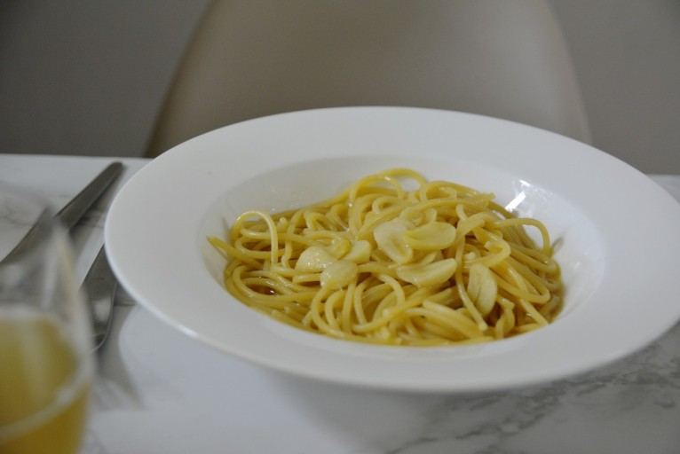

- 파스타
- 스테이크
- 소스
스테이크 레시피
프라이팬에 기름을 넉넉히 두르고 프라이팬을 뜨겁게 예열한다.
예열이 됐다면 프라이팬에 고기를 올린다.
고기의 겉면은 타지 않는 선에서 바싹구워야하는데 이는 마이야르 반응을 일으키기 위함이다.
겉면에 색이 충분히 났다면 약불로 줄이고 프라이팬에 버터와 으깬 마늘, 타임이나 로즈마리 등의 허브를 넣는다.
프라이팬을 기울이고 스푼을 이용해서 고기위에 버터를 계속해서 끼얹는데 이를 베이스팅이라고 한다.
다 구운 고기는 프라이팬에서 꺼내 5분에서 10분간 레스팅을 해야하는데 이는 육즙이 고루 퍼지게 하기 위함이다.
